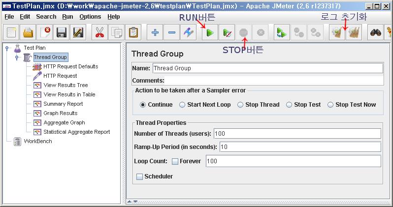
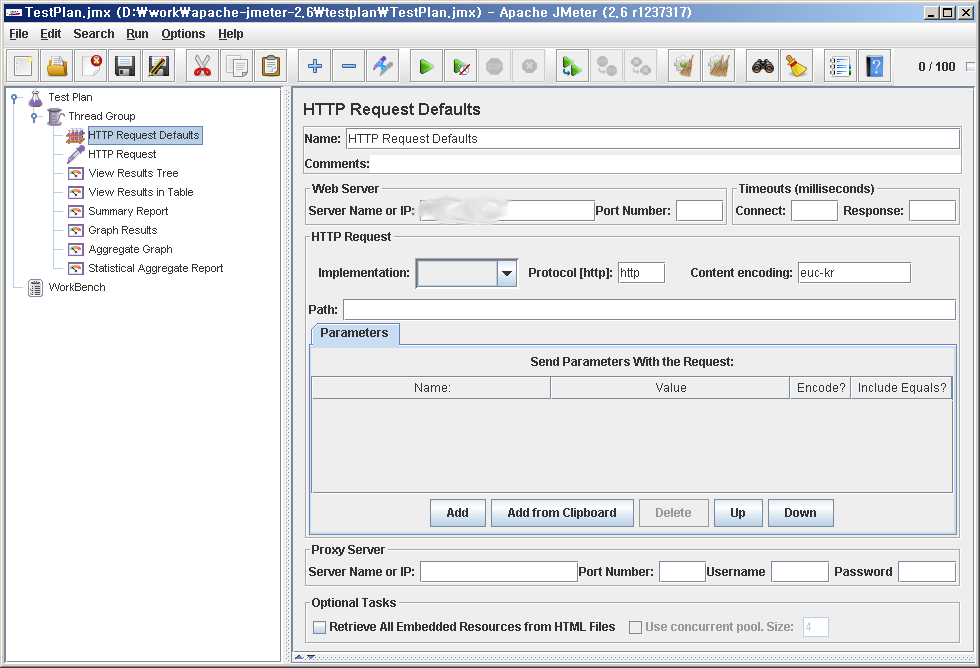
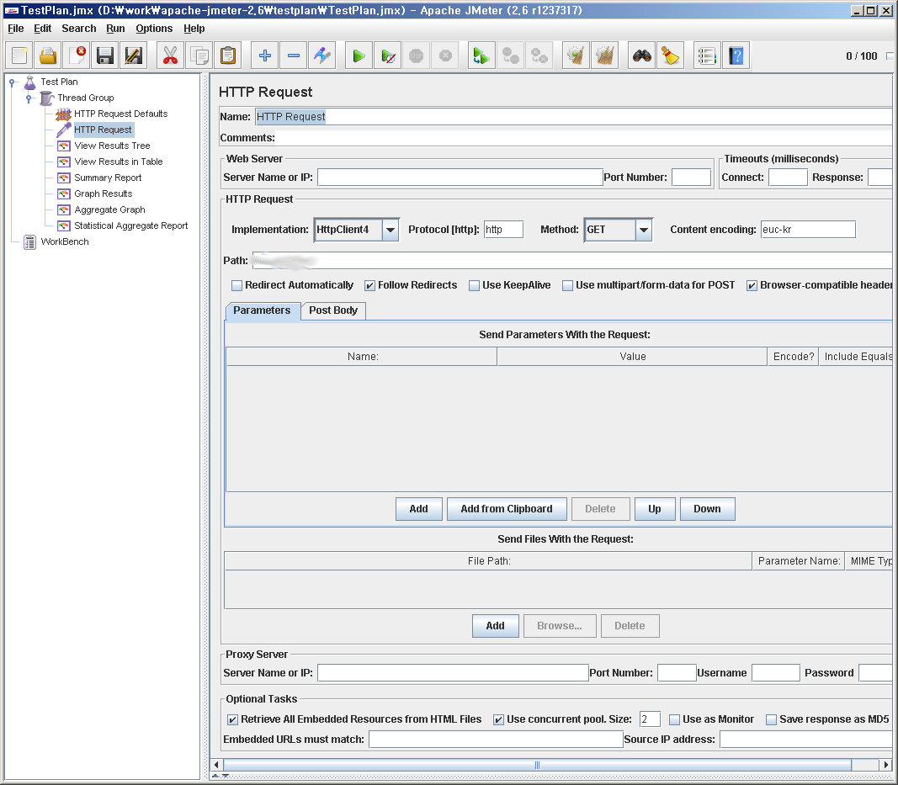
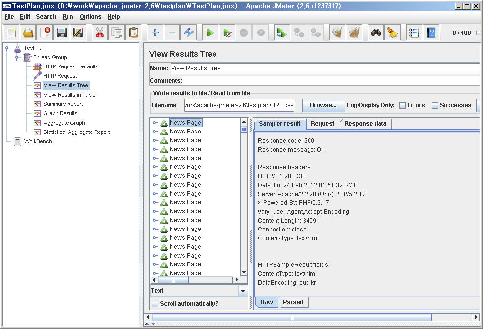

JMeter 소개 [NEW]
- 작성자 : 공대여자
- 작성일 : 2012/02/24
소개
- 공식 이름 : Apache JMeter
- 뭐하는 물건? : 스트레스 테스트 프로그램, 벤치마킹 프로그램
- http 뿐만 아니라, DB, SOAP 등등 여러형식의 테스트를 지원한다.
- 공식 사이트 : http://jakarta.apache.org/jmeter
- 현재 버전 : 2.6
- 요구사항
- JAVA 1.5 버전 이상의 JRE
- 소스를 수정해서 사용할 예정이라면 JDK 가 필요
- DB관련 테스트를 할 예정이라면 관련 .jar 파일을 lib 폴더에 넣어줘야한다.
- 윈도우의 경우 NT서버 필요
- 윈도우 XP같은 개인 사용자용 윈도우의 경우 다량의 커넥션을 테스트 할 경우 에러가 발생되면서 페이지를 긁어오지 못하는 경우가 생긴다.
- Response code: Non HTTP response code: java.net.BindException
Response message: Non HTTP response message: Address already in use: connect
- 원인 : 개인 사용자의 윈도우의 port범위가 쫍아서 포트 사용 충돌이 발생되는 것 같다.
- 윈도우 2003 에서 테스트시 문제가 없었다.
설치법(윈도우 기준)
- JRE 설치
- .exe파일로 설치하면 자동으로 JAVA_HOME 등이 잡힌다.
- JMeter 설치
- 다운로드 받은 압축파일을 원하는 폴더에 푼다.(Binaries로 받기 바람)
- 수정 필요 사항
- 동작시 JAVA의 메모리 설정에 의해서 문제가 생길 수 있다.
- jmeter.bat 속 71라인 부분을 알맞는 메모리 사이즈로 수정(그외 설정 값은.. 알아서...)
- ex> set HEAP=-Xms1024m -Xmx1024m
사용법(윈도우 기준)
- JMeter 압축푼 경로에서 ./bin 폴더 속의 jmeter.bat 를 실행
- 실행시 cmd창 하나와 GUI 화면이 떠야한다. 안 뜨고 에러난다면 JRE설정 등에 문제가 있을 것이다.
- 웹페이지 호출 관련 테스트 구성
- 참고
- 이 테스트 구성은 단순한 페이지 호출일 뿐이다.
JMeter 는 좀더 복잡하고 구조적인 테스트를 할 수 있다.
관련해서는 데모를 참고하길 바란다.
- RUN & STOP
- RUN : 연두색 재생 버튼을 누르면 된다.
- STOP : RUN 중일 대 빨간색 STOP
- 로그 초기화 : 기어모양+빗자루 아이콘을 누르면 된다.(빗자루가 두개있는 것을 선택하면 모든 로그가 초기화 된다.)
- 상세 설명
- Test Plan : 기본 플랜(처음에 생성되어있다.)
- Thread Group : 쓰레드를 생성해서 테스트 하기 위한것.

- Number Of Threads (users): 최대 테스트할 쓰레드 수(동시 동작할 수)
- Ramp-Up Preriod (inseconds): 쓰레드 증가 폭
- Loop Count : 쓰레드가 몇번 동작 할 것인지를 설정
- HTTP REquest Defaults : Thread Group에서 컨텍스트 메뉴 add -> config element -> HTTP Request Defaults 
- HTTP Request 에서 사용할 기본 환경 설정(빈값을 위 값으로 대체한다.)
- Server Name or IP 와 Impplementation,Content encoding 성조만 설정하면 된다.
- HTTP Request

- 실제 호출된 페이지를 설정
- 기본적으로 Fllow Redirects, Browser-compatible headers 를 체크하였다.
- Retrieve All Embedded Resoutces from HTML files 를 선택하면 요청 경로의 HTML을 파싱해서 관련된 모든 파일을 다운로드 받는다
iframe, imge, js, css 등
- implementation 설정에 따라서 에러가 날 수 있다.(페이지가 잘못 되어있기 때문에. 언어셋, urlencode 등의 문제)
이 때는 설정을 JAVA로 바꿔서 다시 해보기 바란다.
- Use concurrnet pool. Size 는 동시에 요청하는 수를 설정한다.
- 보통 브라우저는 하나의 도메인에 2개의 요청을 한다.(IE8는 4개라고 하더라..)
그에 맞춰서 2,4 등으로 설정한다.
- 필요시 Parameters(Request header 값)과 Post Body 값을 넣어라
- View Results Tree

- 결과 페이지이다. (앞의 아이콘이 같다면 전부 결과 페이지이다.)
- 참고
- Statistical Aggregate Report 는 사용자가 만든 Plug in 이다.(따로 검색 및 다운로드해서 ./lib 폴더에 넣어주면 된다.)
- 주요 결과 필드
- Throuhput : 초당 동작 정도.(this/sec)
- Average(Average Response Time) : 호출시 걸린 시간(msec)
- Deviation : 편차 , 클 수록 들쭉 날쭉한 결과라는 뜻
분산테스트(원격테스트)
를 위한 설정
- jmeter.properties 속에서
- remote_hosts=127.0.0.1,123.123.123.123:8800
- 원격지(SLAVE) 부분의 컴퓨터를 지정한다.
- , 로 구분해서 IP를 추가하면 된다. 기본 포트(1099)를 사용하지 않을 경우는 뒤에 포트를 같이 적어주면 된다.
- mode=Statistical
- Statistical 으로 지정해야, 계속적인 테스트가 가능하다. Hold 등으로 할 경우 지정된 횟수,시간 마다 Sleep 시간이 생긴다.
- Run
- MASTER(SLAVE에서 jmeter-sever 가 실행되어있어야함)
- 메뉴 Run -> Remote Start
- 메뉴 Run -> Remote Start ALL
- SLAVE
- jmeter 설치 폴더 속 bin 폴더에서
jmeter-server
원격 에이전트 실행
- 원격테스트로 테스트 할 경우 관련 로그는 서버(MASTER) 컴퓨터에 저장된다.
- 윈도우 xp , 듀얼 1.8Ghz, 3.2Gb 에서 HTTP 호출 테스트 할 경우 thread가 200을 넘기기 힘들더라.
이럴경우 원격으로 만들어서 해봐라.
추가정보
- 윈도우의 TIME_WAIT 줄이기및
- http://genes1s.egloos.com/2706024
- 링크를 참고해서
TIME_WAIT
TcpTimedWaitDelay
MaxUserPort
MaxFreeTcbs
MaxHashTableSize
KeepAliveTime
등을 수정하여, 테스트에 필요한 환경을 수정
- reg 수정 자동화 파일(꼭 관련 부분을 백업 후 적용하시기 바랍니다.)
- Servers Performance Monitoring